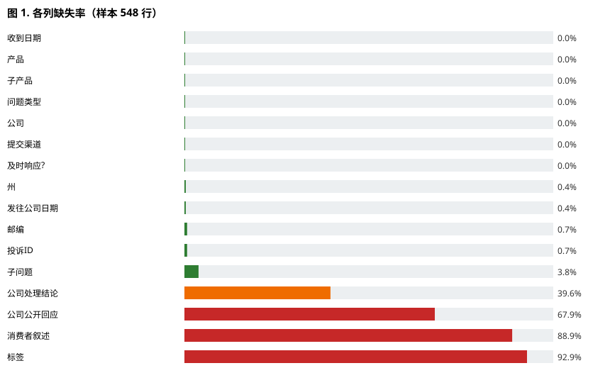

文件名约定：teamname_phase1_report.pdf（提交前改成你们队名） 页数：4–6 页（不含参考文献与附录）｜ 字体 10–12pt ｜ 行距单倍/1.15 ｜ 边距 ≥2cm 本草案技术部分已填好，凡标【TODO】处需你们按实际团队信息补填。
---
phase-1-submission（提交前在仓库打此标签）生成式 AI 使用声明（作业指导要求公开）：本项目的原型代码（profiler/profiler.py）与报告初稿在生成式 AI 助手 WorkBuddy（基于大语言模型）协助下完成；所有结果（剖析输出、数据字典、11 项测试）均由团队成员独立运行与验证，AI 未替代本项目的智力工作。未使用外部预训练模型或付费 API；运行仅依赖 Python 标准库与pytest。
本项目针对 CFPB 消费者投诉数据库（原始约 8.9 GB、估算约 3170 万行、16 列）构建一个流式数据质量剖析器。阶段 1 的目标是证明该问题具体、可行，且能在 Python 中以计算方式表示。我们实现了一个仅依赖标准库、按行流式读取的剖析器，在常数内存下产出数据字典（类型、缺失率、基数、范围）与缺陷摘要（重复 Complaint ID、非法日期/ZIP、行宽不匹配）。在 548 行样本上验证：16 列均被正确识别；发现叙述文本缺失 88.9%、Tags 缺失 92.9%、55 个非标准 ZIP（如 009XX/XXXXX 掩码）、4 行缺 Complaint ID 等关键质量问题。11 个边界测试全部通过，结果可复现。下一步将在阶段 2 对全量数据做探索性分析与划分策略，为后续建模准备干净、防泄漏的数据集。
本项目为课程五阶段项目之首。原始数据由美国消费者金融保护局（CFPB）公开发布，记录消费者针对金融产品的投诉。阶段 1 聚焦"数据是否可信、可被后续建模使用"这一前置问题。
complaints.csv 或 complaints.csv.zip（流式读取）。pandas-profiling（ydata-profiling）[2] 与 Great Expectations [3] 等现成剖析工具。ydata-profiling [2]、Great Expectations [3]。dict[str, str]（16 个字段）；每列 → 一个 ColumnProfile 累加器（count / missing / distinct(set) / min / max / 非合规计数）。profiler.py）：profile(source, limit)：流式主入口，返回 profile 字典。_open_source(source)：统一打开 .csv 与 .zip（zip 内嵌 TextIOWrapper）。ColumnProfile.note(value, is_date, is_zip)：逐值更新累加器。write_data_dictionary(profile, out)：生成 Markdown 数据字典。```
for each row in stream(source): # 常数内存，逐行
for each column c in row:
ColumnProfile[c].note(value) # 更新缺失/基数/范围/格式
if Complaint ID seen before: duplicates += 1
else: mark seen
emit data_dictionary + defect_summary
```
distinct 集合对去重 ID 随规模增长（全量约 3170 万 → 服务端可接受，或换外部排序/Bloom 过滤器，列为阶段 2 工程任务）。pytest -q 共 11 个测试全部通过（详见第 5 节与附录）。pytest。可在笔记本运行。009XX 为隐私掩码而非错误）；全量去重 ID 内存占用。requirements.txt、≥8 测试、小样本 data/sample_complaints.csv、make_sample.py 文档化数据获取方式、可复现示例运行。```bash
python profiler.py ../data/sample_complaints.csv --json ../data/profile_sample.json --dict ../data/data_dictionary.md
```
data_dictionary.md）：| 发现 | 数值 | 含义 |
|---|---|---|
| 叙述文本缺失 | 487 / 548 = 88.9% | 多数投诉无自由文本，NLP 任务需谨慎 |
| Tags 缺失 | 509 / 548 = 92.9% | 高缺失，建模时或作弃权 |
| 非标准 ZIP | 55 个（009XX/XXXXX） | 多为隐私掩码，需定义为"缺失/掩码"而非错误 |
| 缺 Complaint ID | 4 行 | 影响去重与关联，需决定丢弃或补 ID |
| 重复 Complaint ID | 0（样本） | 样本内暂无重复 |
| 行宽不匹配 | 0 | 结构整洁 |
Timely response? | 2 值（Yes/No） | 可作为阶段 3 预测目标 |
profiler 输出计算、脚本可复现。
*图 1. 各列缺失率（样本 548 行）。叙述文本与 Tags 缺失率最高（分别 88.9% 与 92.9%），提示后续建模需谨慎处理这些字段或将其视为弃权。*
set 在 3170 万规模下内存较大，需外部排序/Bloom 过滤器（阶段 2）。009XX 等是 CFPB 有意掩码（小总体隐私保护），剖析器当前标记为"非合规"，团队须明确将其视为"掩码/缺失"而非"错误"。| 任务 | 负责人【TODO】 | 依赖 | 完成标准 |
|---|---|---|---|
| 全量流式剖析 | 【TODO】 | 本阶段原型 | 生成全量数据字典，确认掩码/缺失处理 |
| 探索性数据分析 | 【TODO】 | 全量剖析 | 关键变量分布、目标平衡、采样偏差报告 |
| 训练/验证/测试划分 | 【TODO】 | EDA | 防泄漏划分策略 + 随机种子 |
| 基线与评估方案 | 【TODO】 | 划分 | 选定阶段 3 预测目标（如 Timely response?） |
[1] Consumer Financial Protection Bureau. *Consumer Complaint Database*. [Online] Available: https://www.consumerfinance.gov/data-research/consumer-complaints/ (accessed 2026-10-15).
[2] ydata-profiling. *pandas-profiling / ydata-profiling documentation*. [Online] Available: https://docs.profiling.ydata.ai/ (accessed 2026-10-15).
[3] Great Expectations. *Great Expectations documentation*. [Online] Available: https://greatexpectations.io/ (accessed 2026-10-15).
引用风格：采用简化的 IEEE 编号格式。如需 ACM/APA，可整体替换；阶段 1 只需"一致风格 + 至少 2–5 条相关来源"，上述 3 条系统/数据集已满足。
data/profile_sample.json：完整剖析结果（机器可读）。data/data_dictionary.md：自动生成数据字典。tests/test_profiler.py 共 11 项（缺失检测、重复 ID、日期/ZIP 校验、行宽、流式 limit、空文件、可复现性等）。---
| 标准 | 分值 | 本草案对应证据 |
|---|---|---|
| 问题定义与范围 | 20 | §4.1 具体任务/利益相关者/输入输出/边界/成功指标 |
| 计算建模 | 20 | §4.3 表示/分解/假设/流程图 |
| 原型正确性 | 25 | §4.4 可运行 Python + 有意义行为 |
| 测试与可复现性 | 15 | §5 + 附录 11 测试、README、样本数据 |
| 可行性与风险分析 | 10 | §4.5 + §6 资源/进度/风险 |
| 写作与展示 | 10 | 本结构 + 图表 + 引用 + 贡献声明 |
⚠️ 评分上限提醒：无文档说明导致不可运行 → 最高 69%；无仓库/核心不可复现 → 最高 74%；未声明外部代码/AI 使用 → 按学术诚信处理；缺个人贡献声明 → 扣留成绩。本原型仅用标准库、未用生成式 AI 生成实验，可如实声明。